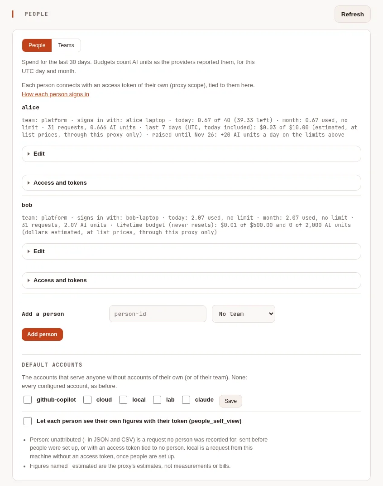
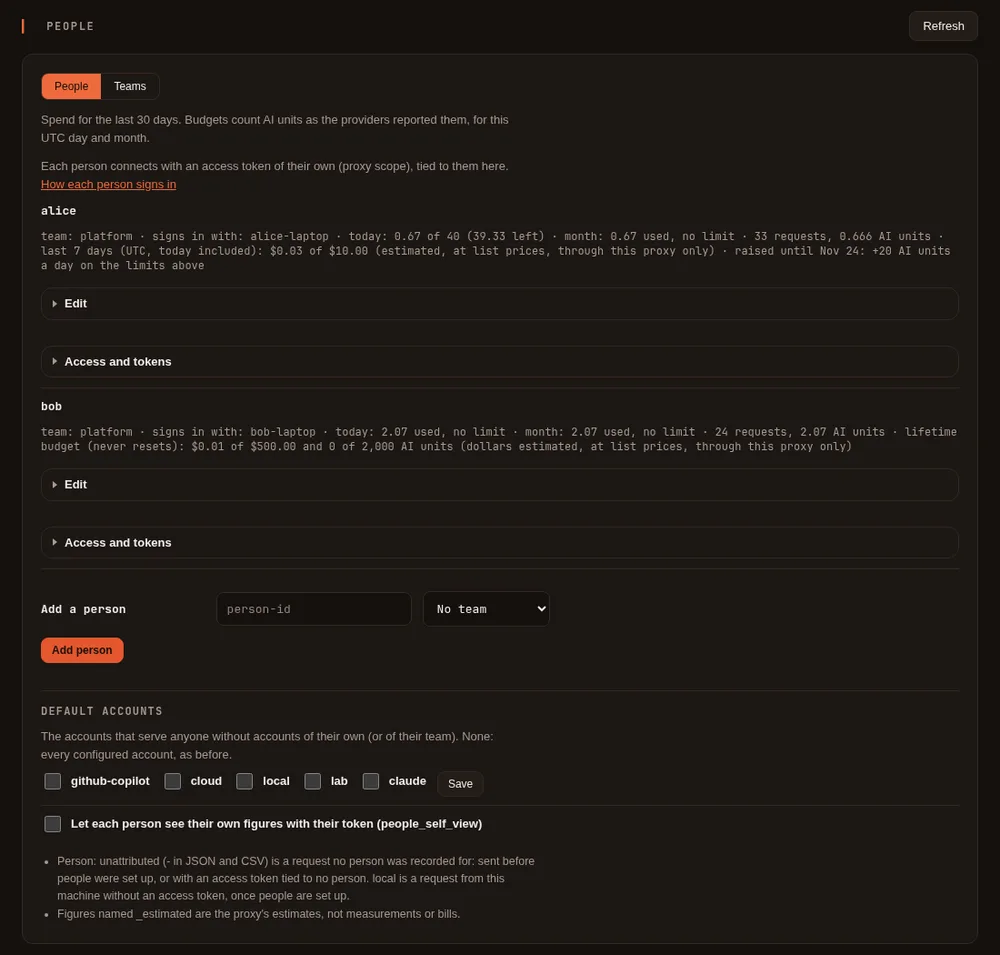

Teams & hubsSet it up19 min read
Access control: organizations, roles, keys and end users #
On this page
A shared proxy can do more than count who used what. This page covers the controls added in 3.0: organizations above teams, roles for the people who manage the proxy, rules per access token, budgets per end user of your own application, budgets over several windows at once, temporary increases, model access groups, hidden models, team access hours, address allow lists, and organization, model-alias and spend calls shaped like LiteLLM's management API.
Running Maple for yourself?
You need none of it. Every setting here is off until you set it, on the setup page (People & teams, card
Access control) or in config.yaml, and a proxy without any of them behaves exactly as before. The basics
(people, teams, tokens, budgets) are in Teams; this page builds on them.
In plain words #
- Organizations group teams. An organization can cap what all its teams spend together and narrow the models they may use. A team belongs to at most one organization.
- Roles say what a person's own token may do through the management API:
admin,viewer,org_admin,team_adminandmember. Anorg_adminlooks after the teams of its organization, ateam_adminits own team's people, and amemberitself and its own keys. - Key rules belong to one access token: a budget (AI units, dollars or both), a model list and the addresses it may be used from, on top of whatever its person and team already have.
- End-user budgets are for your own application's customers. Your app names the customer in each request (the
OpenAI
userfield, Anthropic'smetadata.user_id, or a header you choose) and each customer gets a budget of their own. You can also give all of one application's customers a budget they share, so a made-up customer name per request cannot get around it. - Several windows at once: a budget can hold a daily and a monthly limit and, in dollars, any number of rolling windows such as "at most $40 over any 7 days". Every limit must hold.
- Temporary increases raise a budget until a date and time you give, then it goes back by itself.
- Model access groups are named sets of models ("cheap", "beta") that you grant to people, teams, organizations and
keys by name. A group can be hidden (
discoverable: false): its models are left out of model lists, and whoever is allowed them can still use them. - Access hours limit when a team may send requests, such as weekdays 08:00 to 18:00 in your time zone.
- Address allow lists limit where a token, a team or an organization may send requests from.
Each rule only narrows what is allowed: a key's list cannot widen its team's, and an organization's budget holds alongside every team's and person's own.
To set them up on the setup page:
- Protect the page if you have not: Page password, Protect this page. The access-control forms need a page password; without one they are read-only.
- Open People & teams, card Access control. There is one form each for organizations, token rules, end users and model access groups.
- Set a person's or team's role, groups, budget windows, addresses and hours on the People card.
- Save. The rules apply from the next request; no restart.
Who this is for #
Read on if one proxy serves several teams or departments, if you hand tokens to programs that should have their own cap, if you build an application whose customers each need a spending limit, or if you are moving from LiteLLM and want its management calls to keep working. For one person, or a small team that only needs per-person budgets, the Teams page is enough.
Organizations #
organizations:
- id: acme
budget: {monthly_usd: 500, windows: [{days: 7, usd: 150}]}
models: {allow: ["copilot/*", "claude-*"]}
teams:
- id: web
organization: acme
- id: data
organization: acmeRequests from people in web and data count against acme's budget as well as their own and their team's. A model
must be allowed by the organization's list too. An organization's budget can be in AI units and in estimated dollars,
like a team's. When it is spent, the refusal names the organization without showing its figures, since they are
everyone's spend.
People join an organization through their team: there is no separate member list.
Roles #
people:
- {id: root, role: admin, tokens: [<token-id>]}
- {id: auditor, role: viewer, tokens: [<token-id>]}
- {id: alice, team: web, role: org_admin, tokens: [<token-id>]}
- {id: bob, team: web, role: team_admin, tokens: [<token-id>]}
- {id: carol, team: web} # member, the defaultWith management_api: on, a person's own token (the proxy scope) reaches the management API as far as their role
does:
| Role | Organizations, model aliases, spend | People (/user), teams (/team) and keys (/key) |
|---|---|---|
admin | changes organizations and model aliases; reads everything | everything, as a manage token |
viewer | reads every organization and all spend | reads every person, team and key; changes nothing |
org_admin | reads its own organization, and the spend of its teams and their people | reads and changes the teams of its organization, their people and their keys; makes teams (in its organization) |
team_admin | reads its own team's spend | reads its team; adds, changes and removes its team's members and their keys |
member | reads its own spend | reads itself and its own keys; makes, rotates, blocks and deletes its own keys |
Some lines nobody below admin crosses: nobody changes themselves (their own keys apart) or a person of their own role
or above, so a team_admin cannot raise its own budget and an org_admin cannot touch an admin in its organization;
a team_admin does not change its own team's models, budget or limits (its organization's admin does); a key blocked
over someone's head (by a higher role) stays blocked until that role or above unblocks it, and until then that person
cannot make, unblock, rotate or delete any of their keys, from any other key either; a key you block yourself does not
lock you out. A blocked key shows who blocked it (blocked_by), and the refusal names them; only an admin makes a key with a person of
its own (a key without a user_id) or moves someone to a team outside the caller's reach, or puts people in a team
that has no entry of its own yet. A person someone below admin sets up, changes or makes a key for may not have
looser limits than that someone's own (budget, rates, models), since their key would carry them past their own. A
key a member makes for themselves expires no later than the key they asked with, and a key with rules of its own
(keys:) cannot be used to make another; below admin a person holds at most 50 keys. /model/info and /health
list every deployment, so they are for an admin or a viewer; everyone lists the models they may use at /v1/models.
A refused call answers 403 (or 404 "not yours to see" for something outside your reach, so names cannot be
guessed), changes nothing (a delete of several things checks them all first), and is written to the audit log. A token
with the manage scope acts as an admin whether management_api is on or not: see
LiteLLM's management API. org_admin needs a team in an organization and
team_admin a team. People handed down by a parent hub hold no role on the proxy below it: roles are set on each proxy
for its own people.
Key rules #
keys:
- token: <token-id> # the id, never the token itself
budget: {daily_usd: 5, monthly_usd: 50}
models: {allow: [gpt-5-mini]}
access_groups: [cheap]
allowed_ips: [10.20.0.0/16, 192.0.2.7]
limits: {requests_per_minute: 60, input_tokens_per_minute: 200000, max_concurrent: 4}A key's budget can be in AI units (daily_ai_units, monthly_ai_units), in estimated dollars (daily, monthly,
windows) or both, with a temporary increase of either. Its spend is kept in the proxy's spend store (the spend file on
one machine, the shared store with several replicas), so a restart keeps it; it is not rebuilt from the usage log,
so if that store is lost, a key's spend starts again from zero. An AI-unit limit added part way through a month
counts from when it is set. A key with rules works whether or not people are configured; a request with it is held to
the key's rules and to its person's and team's.
A caller on this machine without a token #
On an address that only listens on this machine, a program may leave its token out. Once keys: has rules, that would
leave the key's rules behind, so such a request is refused (401, saying what to do) unless you say otherwise:
keys:
- token: local # the rules a caller on this machine without a token is held to
budget: {daily_ai_units: 50}
local_without_token: serve # or refuse; leave it out for the rule above- With an entry for token
local, such a request is served and held to that entry (budget, models, addresses). local_without_token: serveserves it without a key's rules, as before;refuserefuses it even with alocalentry.- Without
keys:(or with only rules a parent hub hands down for its own tokens) nothing changes: a caller on this machine without a token is served as always. If you run Maple Harness on the same machine as a proxy withkeys:, give it a token, or add thelocalentry.
A gateway that names people #
In plain words. A gateway in front of the proxy, such as a LiteLLM gateway, sends every request with its one token, so the proxy would count all of them as the gateway's. If the gateway's own callers are your people, you can let its token say, for each request, which person it is for, out of a list you give: that person's models, budgets and limits then apply, and the usage log names them.
keys:
- token: <the gateway token's id>
names_people: [alice, team:platform] # people by id, and every member of a team; no wildcard
models: {allow: [gpt-5, claude-sonnet-5]} # still holds, for everyone it namesThe technical view.
- The person is named by their id in
people:, in the OpenAIuserfield where the route has one (chat completions, the Responses API, legacy completions, embeddings, images; auserform field on audio), read whatever the request'sContent-Typesays. Everywhere else (the Anthropic surface, reading or deleting a stored response, files, batches) the person is named in LiteLLM'sx-litellm-end-user-idheader; Anthropic'smetadata.user_id, which Claude Code fills with an id of its own, stays the end user it always was. - A body over 32 MB from such a token is refused (
413), not read as the token's own. The request is then that person's: their team, model list, budgets and rate limits, and the usage log line. - The token's own rules hold as well: its
keys:entry, and, when the token belongs to a person, that person's rules and budget, which every request it names is charged to as well. - A
useroutside the list, one that is no person here, and thelocalperson are all refused with the same403 person_not_foundand the same words, so the answer never tells whether someone exists. Nothing is charged to someone who did not ask. Without auser, the request is the token's, as before. - What is kept per caller is kept per named person: answers from the response cache, stored Responses API
conversations (
previous_response_id) andIdempotency-Keyreplays. - MCP hub tools run in such a request only when both the gateway's token and the named person may have the proxy
run them (
mcp_hub.tool_loop), and only the tools both may use (mcp_hub.people). Servers each person signs in to for themselves are left out: the sign-in there would be the gateway's, never the person's. - Guardrails assigned to the named person or their team run, and so do those assigned to the gateway token's person or team, for the request and for its tool calls.
- A request that names nobody is the gateway token's own.
- Address rules (
allowed_ips) are the gateway token's, not the named person's: every request arrives from the gateway's address, so the person's own address is not something this proxy can see. - Any other token's
userfield names an end user only, as it always has (below).names_peopleis never handed down by a parent hub, and a request a proxy below forwarded is never renamed this way.
Who can name whom
The user field comes from the gateway: unless the gateway sets it itself from the caller it signed in, any of its
callers can name anyone on the list, use their models and accounts and spend their budget, and the usage log names
that person. Use names_people only with a gateway you trust to set user from its own authenticated caller, list
only the people it serves, and keep the token's own model list (models.allow) and budget as narrow as the gateway
needs.
End-user budgets #
end_users:
header: X-End-User # optional; otherwise the body's user field
default_budget: {daily_usd: 1}
shared_default_budget: {daily_usd: 50, daily_ai_units: 200} # all of a caller's default end users together
max_tracked: 10000 # the most end users kept per caller (the default)
users:
- id: customer-42
budget: {monthly_usd: 20}The end user is read from the header when one is set and present (only that header, when one is set), else from
LiteLLM's x-litellm-end-user-id or x-litellm-customer-id header, otherwise from OpenAI's user field or
Anthropic's metadata.user_id. An id of letters, digits and . _ @ : - up to 64 characters is kept as it is; anything longer or
odder is kept as a short hash, so it still counts as one end user. A request without an end user has no end-user
budget. Like a key's, these budgets can be in AI units, dollars or both, and are kept across a restart.
Each caller's end users are its own: customer-42 named with one person's or token's requests and customer-42 named
by another are two end users, so one application cannot spend another's customer's budget. When an end user's budget
is spent, the refusal names the end user without showing the figures.
A guard, not a boundary
End-user budgets are a guard for your application, not a security boundary: whoever holds the token decides the end user, and a new name starts a new budget.
Two settings keep that in bounds:
shared_default_budgetis one budget that all of a caller's end users ondefault_budgetshare (each caller, person or token, has its own). A program that names a new end user with every request still stops there. End users listed inuserswith a budget of their own are not counted in it.max_trackedis how many end users' spend the proxy keeps at once for each caller (10,000 unless you set it, at most a million), so one application naming many end users never pushes out another's. Past it, that caller's end user seen least recently is forgotten: their spend is dropped, and if they come back theirdefault_budgetstarts afresh. A new end user is always held todefault_budget. End users listed inusersare never forgotten. With several replicas, the shared store keeps each end user's figures until they age out instead.
Use a key budget for the token itself.
Budget windows and temporary increases #
Any budget (a person's, team's, organization's, key's or end user's) can add rolling dollar windows and a temporary increase:
budget:
daily_usd: 10
monthly_usd: 100
windows:
- {days: 7, usd: 40} # at most $40 over any 7 days, today included
temporary:
daily_usd: 20 # $30 a day ...
until: "2026-12-01T00:00:00Z" # ... until thenA window counts the last days UTC days, today included, and moves on at 00:00 UTC; windows of 1 to 62 days are
accepted. A temporary increase adds its amounts to the limits of the same kind that are set (it never adds a limit that
is not there) and ends at until. On the proxy below a hub, a local entry may add windows (they only narrow) but not
a temporary increase of a budget the hub hands down.
Before each request, the proxy reserves what it is expected to cost against every budget it counts against, and releases the reservation when the request ends, as for every other budget. Requests already running when a limit is reached are not stopped.
The setup page's People card (People & teams page) shows each person's and team's windows with what their days hold so far (estimated, from the usage log), a temporary increase while it lasts, and a lifetime budget with what has been spent since it was first counted.


Lifetime budgets #
In plain words. A budget that never resets: once a person, team, organization, token or end user has spent it,
they stop until you raise it. LiteLLM's budgets without a budget_duration come across as one.
people:
- id: contractor-7
budget:
windows:
- {period: lifetime, usd: 500, ai_units: 2000} # dollars, AI units, or bothThe technical view.
- It counts everything spent since the spend store first counted it: the days the store still holds, plus a total it carries over from the days it no longer holds. Before a day is dropped, its spend is added to that total in the same step, so a day is never counted twice or lost, a crash included.
- One machine: the total is in the spend file beside the days. A rebuild from the usage log (no spend file, or dollar budgets switched off and on) recomputes only the days the log still holds and keeps the total; switching dollar budgets off keeps the total and drops the rest, so what is spent while no dollar budget is set is not counted. Losing the spend file loses the total.
- Several replicas (
storage.mode: central): the total is in the shared store beside the daily spend, added to by retention in one transaction (PostgreSQL) or one script (Redis), so two replicas never add a day twice. - AI units of people, teams and organizations are kept per day for this while some lifetime budget in AI units is set; what they spent before one was set is not in it. Dollars count from when dollar budgets were first counted.
- A spend file that cannot be read (damaged) leaves the totals unknown: lifetime budgets are then refused (
503) rather than counted from zero, until the file is put right. - The setup page's People card shows the total spent, read from the same store the budget check reads (the spend file, or the shared store with several replicas). While that store cannot be read, it shows the lifetime limit and says the total is not shown, never a zero.
- Downgrading to a release before 3.0 drops the carried total: that release reads and writes the spend without it, and prunes old days without adding them to it.
Model access groups and hidden models #
model_access_groups:
- {id: cheap, models: ["copilot/gpt-5-mini", "local/*"]}
- {id: beta, models: ["preview-*"], discoverable: false}
teams:
- {id: web, access_groups: [cheap]}A group's models are added to the model list of whoever is granted it (access_groups on a person, team,
organization or key). Someone granted only groups may use only their models. A hidden group's models are left out of
/v1/models and /model/info for everyone; anyone allowed them can still ask for them by name.
Access hours #
teams:
- id: support
access_hours:
- {days: [mon, tue, wed, thu, fri], from: "08:00", until: "18:00", timezone: Europe/Berlin}Outside every window the team's people are refused with 403 outside_access_hours, before anything is counted. The
time zone is an IANA name the machine knows; without one, UTC. Calls through the A2A gateway are held to the
same hours.
Address allow lists #
allowed_ips on a key, a team or an organization lists addresses and ranges (10.0.0.0/8, 2001:db8::/32,
192.0.2.7). A request from anywhere else is refused with 403 and ip_not_allowed. Behind a load balancer, set
server.trusted_proxies so the proxy sees the client's own address. On a request a proxy below forwards, the address
is that proxy's, so a hub checks the lists of the forwarding proxy's chain token and its team, not those of the person
who asked. The lists hold on the management API and on calls through the A2A gateway too.
The management API #
The proxy's OpenAI-compatible address answers LiteLLM-shaped management calls (see
LiteLLM's management API for /key, /user, /team, /model/info and
/health). 3.0 adds organizations, model aliases and spend:
| Call | What it does here | Who |
|---|---|---|
POST /organization/new, /organization/update, /organization/delete | organizations (one with teams is not removed) | admin |
GET /organization/info, /organization/list | an organization with its teams and this month's estimated spend | admin, viewer; an org_admin its own |
POST /model/new, /model/update, /model/delete | a model alias: model_name to a model the proxy serves | admin |
GET /spend/logs | spend per day, person, team and model (estimated dollars at list prices), not one row per request; user_id, team_id, start_date, end_date | each role its own, as in the table above |
GET /global/spend | this month's estimated spend through this proxy | admin, viewer |
A token with the manage scope can always call them, as an admin. A person's own token (the proxy scope) can when
management_api: on is set and the person has a role. How the fields map:
| LiteLLM field | Maple |
|---|---|
organization_id (or organization_alias) | the organization's id |
models | models.allow; a name that is a model access group goes to access_groups |
max_budget with budget_duration 1d / 30d (or 1mo) / another number of days | daily_usd / monthly_usd / a window of that many days; max_budget: 0 clears it |
model_name, litellm_params.model | the alias and the model it points at |
A field these routes cannot honour (a lifetime budget without a duration, tpm_limit, metadata, provider keys in
litellm_params, and anything else not in the table) is refused with 400 naming it, rather than ignored. Accounts and
their keys are added on the setup page, never through this API. Spend is estimated at list prices from the usage log;
with the usage log off it is null, never a 0 that is not real.
These routes keep the proxy's other guards: a call a browser sends from another site is refused, bad tokens are
throttled per address, each token is limited to 120 calls a minute (on /key, /user and /team too), a write must be JSON of at most 64 KiB, and every
change and every refusal (a bad token, a role that does not reach, an address list, too many calls) is written to the
audit log by ids only, a refusal at most once a minute per address and token with a count of the rest. Changes go through the same checks and save as the setup page's, so
a change the setup page would refuse is refused here too, and without the setup page (server.webui empty) they are
refused.
The settings #
| Key | What it is |
|---|---|
organizations[] | id, budget, models.allow, access_groups, allowed_ips |
teams[], teams[], teams[], teams[] | a team's organization, groups, addresses and hours (days, from, until, timezone) |
people[].role, people[] | a person's role and groups |
keys[] | token (the id, or local for a caller on this machine without one), budget (AI units and dollars), models.allow, access_groups, allowed_ips |
local_ | serve or refuse: a request on this machine without a token while keys: has rules (refused unless keys: has a local entry) |
end_users | header, default_budget, shared_default_budget, max_tracked, users[] (id, budget) |
model_ | id, models, discoverable |
budget., budget. | on every budget: days and usd; daily_ai_units, monthly_ai_units, daily_usd, monthly_usd and until |
management_api | on lets people's roles reach the management API; off (the default) leaves it to a manage token |
They are set on the setup page, in config.yaml, or through the management API, and take effect with the next request.
On the page, People & teams, card Access control has one form each for organizations, token rules, end users,
model access groups, and the roles, groups, budget windows, addresses and hours of the people and teams on the People
card; management_api and local_without_token are under that page's More settings for this page. All of these decide who may use what, so they
need a page password (Page password, Protect this page): without one they are shown read-only (needs a page
password on the form's header), and the raw
configuration editor refuses the same changes. Entries a parent hub hands down stay read-only here. With several
replicas they are shared like the rest of the settings, and the budgets are counted in the shared store.
What is not covered, and what is not verified #
- In a chain, a hub hands down its people, teams and organizations, with their access groups turned into the models
in them, and the
keys:rules of the tokens it hands down; a proxy below never widens them. A local organization of the same id may only narrow one (budget, models, addresses); anything else is reported as a conflict, the hub's applies, and the proxy's own people in its own teams of that organization are refused until it is resolved. A proxy of an older release below a newer hub ignores the organizations and key rules it is handed. A local team can only name an organization this proxy lists, so to put one in a handed-down organization, list it locally (an entry with just its id narrows nothing). - A local entry over one a hub hands down may narrow
allowed_ips, and add access hours or an organization where the hub sets none; anything else is reported as a conflict. /spend/logsgives daily totals, not one row per request.- A key's and an end user's AI units are counted from when their limit is set; they cannot be rebuilt from the usage log.
- On the A2A gateway, address lists and access hours hold; model lists and budgets do not apply, since a call to an agent spends no model.
- Organization spend after a restart on one machine is rebuilt from the teams' spend in the usage log, as the teams are in organizations now.
- The PostgreSQL side of the shared store was not run for these budgets here (Redis was, with a stand-in); a real PostgreSQL, real multi-replica runs, a real chain of machines for the organizations handed down, and LiteLLM's own client against the role-scoped management API are not verified.
Related #
- Teams People, teams, access tokens, budgets and rate limits on one proxy.
- Share Maple with a team Hubs, people and fallbacks, from one shared proxy to a hub of hubs.
- Monthly dollar budgets A monthly allowance for an Anthropic API account, and what happens when it is spent.
- Guardrails Block, mask or log secrets, personal data and your own patterns, at the proxy.
- Proxy settings Every card on the setup page and every key in
config.yaml.